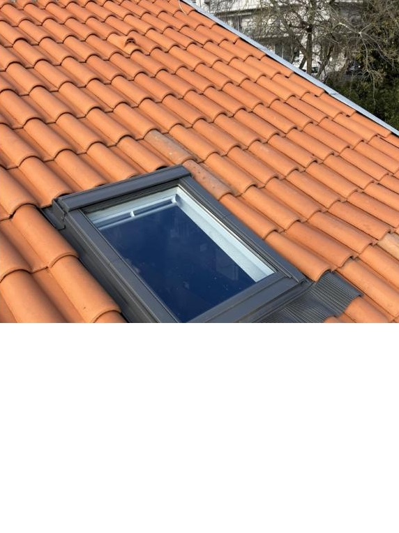
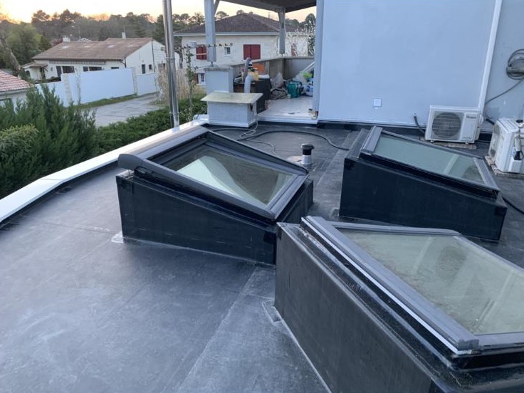
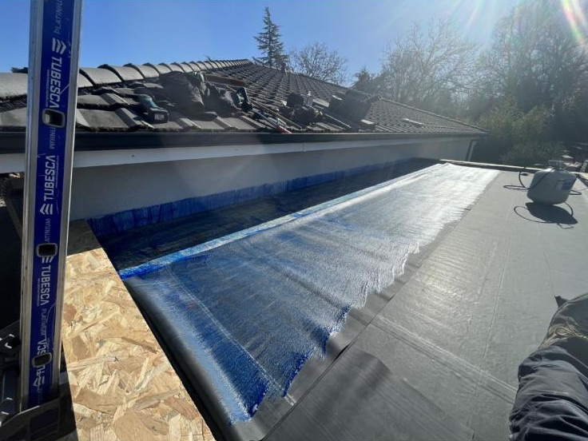
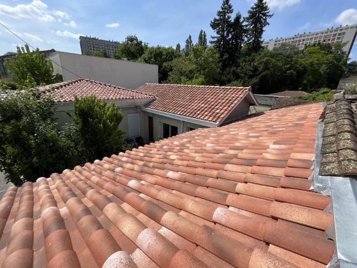
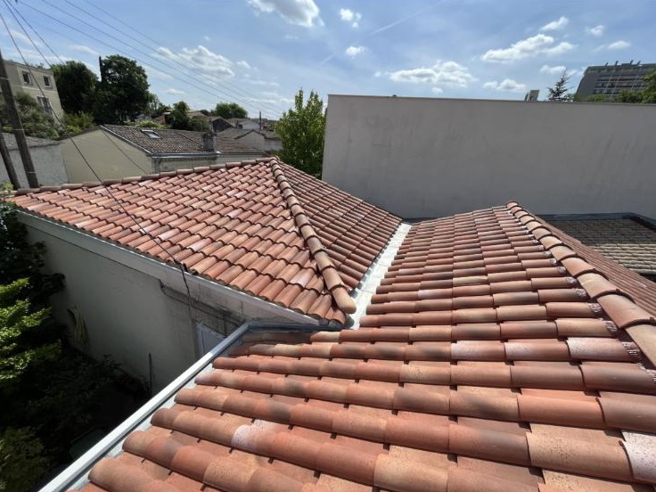

Couvreurs à Cestas, en Gironde
Couverture
Pose, rénovation et réparation de toitures : tuiles, toitures plates EPDM, isolation et fenêtres de toit.
Notre savoir-faire
Une toiture saine, du diagnostic à la finition
Avant toute intervention, nous examinons votre toiture pour trouver l'origine du problème : une tuile cassée, un défaut d'étanchéité, une gouttière mal posée. Ce diagnostic nous permet de ne vous proposer que les travaux réellement nécessaires.
Qualibois 33 prend ensuite en charge l'ensemble du chantier : pose ou rénovation complète de la couverture, isolation thermique, fenêtres de toit, et désormais toitures plates en membrane EPDM.
- Diagnostic précis avant devis
- Tuiles, EPDM, isolation et fenêtres de toit par la même équipe
- Zinguerie et gouttières réalisées dans la foulée

Nos prestations
Nos prestations de couverture
Toiture neuve ou rénovation
Pose de couverture en tuiles sur construction neuve, extension ou rénovation complète, avec reprise de la charpente si nécessaire.
Réparation et entretien
Recherche de fuite, remplacement de tuiles cassées, reprise de l'étanchéité autour des cheminées et des fenêtres de toit, nettoyage et entretien.
Toiture plate EPDM
Conception et pose de toitures en membrane EPDM pour les toits plats et les extensions : une solution durable, étanche et discrète.
Comment ça se passe
Comment se déroule une rénovation de toiture
Diagnostic
Nous montons sur le toit pour relever l'état de la couverture, des raccords et des gouttières, et identifier l'origine des infiltrations.
Devis détaillé
Vous recevez un devis gratuit, poste par poste, avec les matériaux proposés et le planning d'intervention.
Travaux
Notre équipe réalise la couverture, l'isolation et la zinguerie, puis laisse le chantier propre.
Réalisations
Nos toitures en Gironde




Nos autres métiers
Toute la toiture par une seule équipe


Un projet de toiture ?
Visite sur place, conseils et devis détaillé, sans engagement.